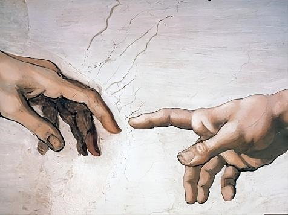

Blog mmc
Bienvenidos a mi rincón digital, donde comparto mis pensamientos, experiencias y pasiones. Acompáñame en este viaje de descubrimiento y aprendizaje continuo. ¡Espero que disfrutes cada lectura tanto como yo disfruto escribiéndola!
Fragilidad humana
Con asombro y casi como si se tratara de un sueño vemos en los medios de comunicación y redes sociales como estamos prácticamente acorralados por un ser microscópico.
Publicado el 22 de marzo 2019

Panchito aventura
Campeón Para-Panamericano de tenis de mesa 1978 en Puerto Rico y de un centenar de medallas representando a la región Lambayeque, Director Regional de Electricidad.
Publicado el 09 de febrero 2019

Mi amigo Kilmer
Dice que la vida es como un viaje en tren. Uno viene al mundo y se sube al tren en una de las estaciones, es un acontecimiento muy grande, divino por naturaleza.
Publicado el 06 de noviembre 2019

Nora y Yo
Una amiga, mujer, madre, dedica al prójimo. Prefería “dejar de comer por dar a sus hermanos”. Estas son las características de Nora en opinión de su esposo..
Publicado el 22 de setiembre 2019

Andy el de la UNI
Cuando recuerdo a mi querido hermano Andujar (Andy), se me ocurre la idea que, si no supimos aprovecharlo en toda su dimensión humana mientras estuvo con nosotros...
Publicado el 10 de agosto 2019

Una visita muy esperada
Corrían apenas los 3 primeros días del año 2019, atrás quedaban los ajetreos, las bullas, los abrazos y sendas promesas por el nuevo año que comienza, y como todo año nuevo trae sorpresas tuvimos en casa
Publicado el 12 de enero 2019

Bienvenido 2019
Un año más que se va. Es increíble cómo ha pasado tan rápido este tiempo. Los primeros meses duraron poco quizás hasta julio (Fiestas Patrias), luego ya fue de “bajada”. Actualmente los días parecen más cortos...
Publicado el 1 de enero 2019

Divide y vencerás
Frase atribuida entre otros al Emperador Romano Julio César, 100 años A.C., que representaría una técnica para generar o alimentar disputas y controversias en un grupo para deteriorar sus relaciones...
Publicado el 6 de setiembre 2018

El tío Juan
Él fue el único familiar directo por parte de mamá. Tenía un gran sentido del humor, tomaba la vida de la forma más práctica, siempre estaba con la sonrisa en los labios, era un “mil oficios”...
Publicado el 30 de agosto 2018

En que iglesia estás?
Y yo también te digo, que tú eres Pedro, y sobre esta roca edificaré mi iglesia; y las puertas del Hades no prevalecerán contra ella. Y a ti te daré las llaves del reino de los cielos...
Publicado el 6 de febrero 2018

Bienvenido 2018
Este nuevo año es para mi familia un nuevo reto, tratar de mejorar lo logrado durante el año que pasó y tratar de ser mejores personas. Mientras tanto somos una familia “nada especial” que asistimos...
Publicado el 2 de enero 2018

Adventismo
Hace tiempo estaba tratando de encontrar un sustento que me aclare dudas sobre los “adventistas”. Mi ignorancia sobre este tema me limitaba poder conversar con propiedad con un amigo (ex policía) ...
Publicado el 31 diciembre 2017

Cronología de la Biblia
Según la historia sabemos que hubo un pueblo elegido por Dios, se inició entre las pequeñas comunidades nómadas, posteriormente el pueblo judío hasta llegar a los gentiles (no judíos). El “encargo” divino empieza con ...
Publicado el 1 diciembre 2017

Una gran mujer
Una mujer muy pequeña en estatura, pero grande en corazón, así era “Mami Silvina” siempre preocupada por sus hijos y familiares. Luchando (simbólicamente) contra todo y en sus últimos años hasta con el cáncer
Publicado el 02 noviembre 2017

Ciencia y Fe
La semana pasada encontré por casualidad un video “La Ciencia y la Fe Cristiana” del Padre: Manuel María Carreira Vérez; (Sacerdote Jesuita, Teólogo, Filósofo y Astrofísico Español, miembro del Observatorio Vaticano),.
Publicado el 3 setiembre 2017
Te cuento Urbano
Otra vez nos reunimos, como si fuese ayer cuando estábamos en el salón del 4to. piso del INSTEA, al lado de los laboratorios y un piso antes de la azotéa donde alguna vez Capucho Vila...
Publicado 26 jul.2017
Primer artículo
Siempre me pregunto, cual es la carga histórica que tiene el Perú que no nos permite salir del letargo de la diferencia social y económica que sigue siendo una característica de nuestro subdesarrollo.
Publicado 16 jul. 2017